Подбор преподавателя, предложение студента, SMS-уведомления и правила брони расписания
После получения заявки на подбор внимательно просмотрите все поля, заполненные координатором. Если что-то не указано или есть неточности — обязательно проясните все моменты в Пачке в чате:
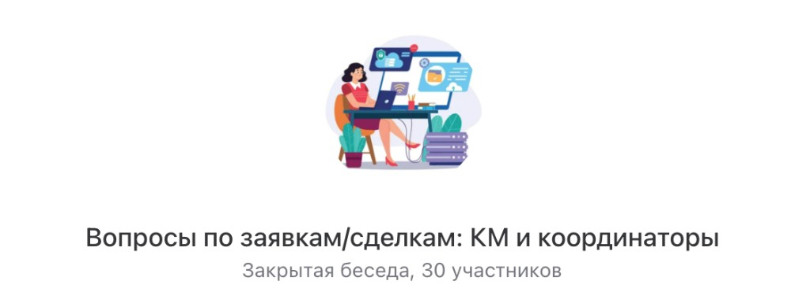
Чат «Вопросы по заявкам/сделкам: КМ и координаторы»
Выставить в ЛК в заявке тариф, который указал координатор.
Учесть все указанные в заявке пожелания студента и постараться найти подходящего преподавателя в этот же день.
Найдите подходящего преподавателя по фильтрам в разделе «Доступные часы 2.0», сразу забронируйте подходящий график у подходящего преподавателя — создайте расписание с этим преподавателем, расписанием и нужным курсом.
Отправьте выбранному преподавателю в Пачке предложение студента. Текст можно взять в ЛК при нажатии на иконку «дискета» в разделе «Расписание» конкретного студента.
Автогенерация текста-предложения преподавателю нового студента
Выберите нужного студента.
Перейдите в раздел «Расписание».
В списке расписаний студента нажмите на кнопку «Скопировать текст предложения студента преподавателю». На основании доступной из профиля студента информации в буфер обмена скопируется сообщение преподавателю о предложении ему нового студента.
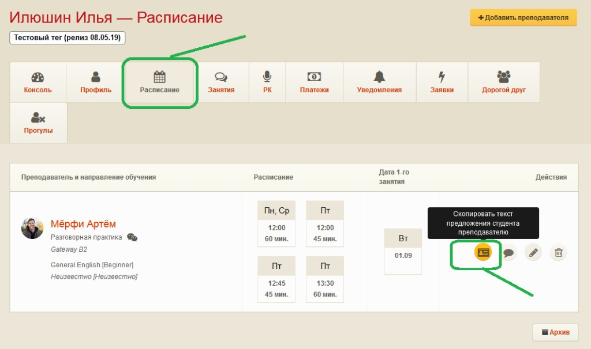
Кнопка «Скопировать текст предложения студента преподавателю»
Недостающую информацию в тексте сообщения нужно заполнить самостоятельно (это значит, что в системе её нет). Будьте внимательны! В шаблон текста для нейтивов нужно вносить почти всю информацию по графику, курсу, уровню.
Если активному студенту или вернувшемуся из архива нужен новый преподаватель на постоянной основе или на замену, то при предложении этого студента новому преподавателю нужно обязательно сообщить:
клиент занимается в нашей школе, но основной преподаватель в отпуске/болеет, нужна замена на 1–2… уроков;
клиент ранее занимался с другим преподавателем, перерыв был … (год, месяц, неделя и пр.);
указать причину, почему сейчас новый подбор (например, «делал перерыв, теперь ищем новое расписание»; негативные ситуации завуалируем, вроде «ищет своего преподавателя», «хочет попробовать с другим преподавателем» и т.п.);
по какому курсу и учебнику занимается/занимался с предыдущим преподавателем.
Эта информация очень важна — нужно всегда её указывать. Для студентов, которые уже обучались у нас, преподаватель проводит другой формат вводного урока.
После того как вы отправите преподавателю предложение нового студента в Пачке, преподавателю надо об этом дополнительно сообщить посредством SMS, чтобы привлечь больше внимания и ускорить процесс подбора.
Выберите нужного студента.
Перейдите в раздел «Расписание».
В списке расписаний студента нажмите на кнопку «Отправить преподавателю SMS о предложении ему нового студента».
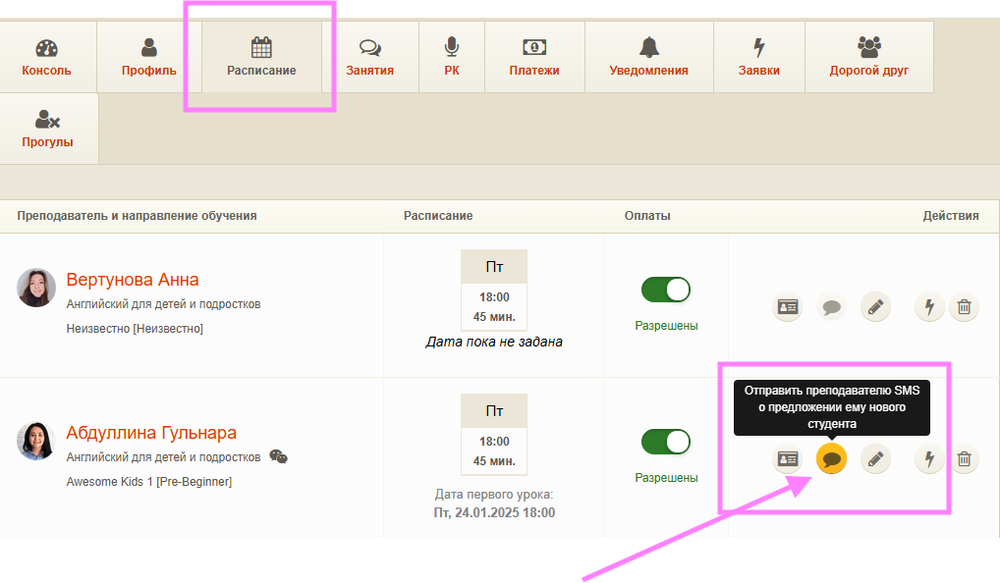
Кнопка отправки SMS преподавателю
Подтвердите отправку SMS:
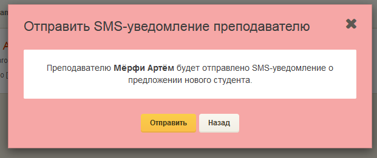
Подтверждение отправки SMS
Преподавателю отправится SMS со следующим содержанием:
«Предложение нового студента от Инглекс. Проверьте, пожалуйста, Skype.»
Если SMS уже отправлено, при наведении мышкой на иконку этой функции будет соответствующее уведомление:
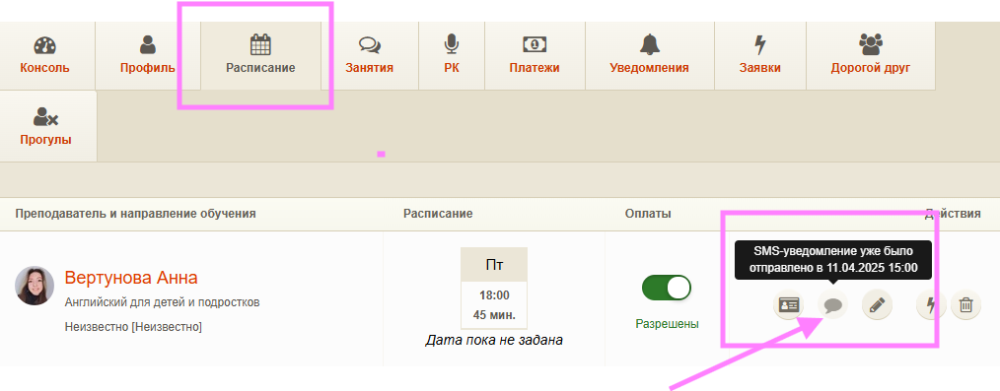
SMS уже отправлено — уведомление при наведении
Дождитесь от преподавателя подтверждения, что может взять на обучение данного студента по всем указанным параметрам, затем свяжитесь со студентом.
ЛКМ: автоматизация предложения студента преподавателю
Это обновление сделано, чтобы вам было проще вести студента. Вся важная информация для преподавателя теперь в одном комментарии, прямо в карточке студента. Назначение вводного урока или первого урока (если без ВУ) можно делать без согласования с преподавателем — преподаватель получит предложение, отреагирует на него, а система зафиксирует результат и при необходимости уведомит вас.
Обновятся и уведомления для КМ, преподавателя и студента — чтобы все были в курсе, что происходит.
Только для русскоязычных преподавателей. С нейтивами по-старому через Пачку — при назначении ВУ снимайте галочку с отправки предложения.
💡
ПСП можно предложить:
при фиксированном расписании;
если дата ВУ должна быть по расписанию;
если до ВУ осталось меньше 24 часов.
Мы добавили «Комментарий преподавателю» — это отдельный комментарий о студенте, который видит преподаватель. Он нужен, чтобы передать ключевые детали перед стартом занятий: что учесть на уроках, на что обратить внимание, как лучше выстроить коммуникацию.
Увидеть этот комментарий можно:
в консоли студента;
в профиле студента;
в карточке студента в общем списке студентов;
в списке студентов преподавателя.
Для одного студента доступен только один комментарий такого типа — он общий и всегда актуальный.
Как добавить или изменить комментарий в карточке студента в ЛКМ
Откройте ЛКМ → найдите студента → зайдите в консоль или профиль студента.
На странице найдите блок «Комментарий преподавателю».
Если комментария нет — увидите плейсхолдер «Комментария пока нет».
Для редактирования нажмите на иконку «Отредактировать комментарий», введите текст и нажмите «Сохранить».
Кнопка с иконкой «глаз» разворачивает и сворачивает длинный текст.
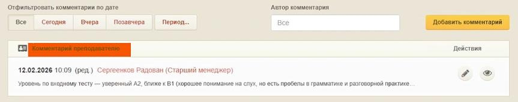
Комментарий преподавателю в ЛКМ
Преподаватель увидит этот комментарий в личном кабинете на странице «Студенты» → карточка студента — без информации о менеджере, который оставил комментарий.
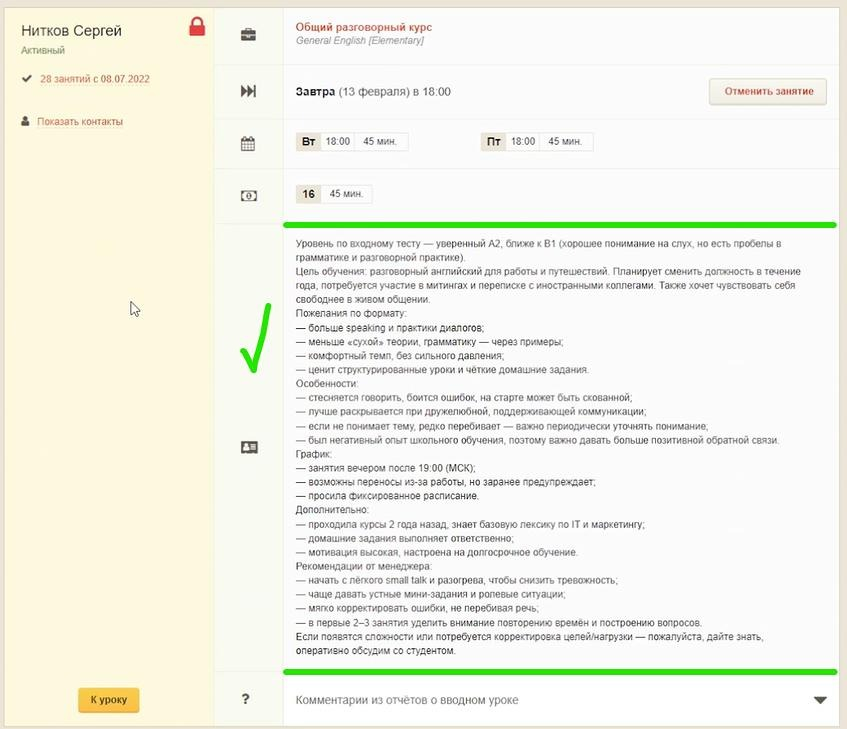
Как видит преподаватель в ЛКП
«Комментарий преподавателю» — это то, на что преподаватель реально опирается. Пишите коротко и по делу. Если нужно свериться, что и когда меняли, историю работы с комментарием можно посмотреть на странице «Комментарии».
ПСП помогает назначить ВУ без необходимости звонить или писать преподавателю в Пачку и запрашивать подтверждение. Вы ставите дату, а преподавателю приходит предложение в личном кабинете в виде большого модального окна, где он должен взять студента или отказаться.
Важно
ВУ назначаются таким автоматизированным способом только на даты и время по основному расписанию студента.
Квалификатор выясняет у студента желаемые дни для занятий и дату для ВУ.
Координатор ищет преподавателя, у которого в графике есть окна под такое расписание.
Координатор создаёт расписание для студента с таким преподавателем в запрашиваемые дни.
Координатор уточняет у студента, подходит ли ему преподаватель, расписание и дата ВУ.
Получив подтверждение студента, без согласования с преподавателем Координатор назначает ВУ в ЛК в поле «Дата и время следующего урока».
Преподавателю автоматически пойдёт предложение студента и запрос на подтверждение ВУ.
В карточке студента откройте модальное окно изменения даты вводного урока и первого занятия. Найдите чекбокс «Отправить преподавателю … предложение студента».
Предложение можно отправлять, если до урока есть минимум 24 часа. После отправки у преподавателя есть около 3 часов, чтобы принять или отказаться. Эти сроки могут со временем измениться.
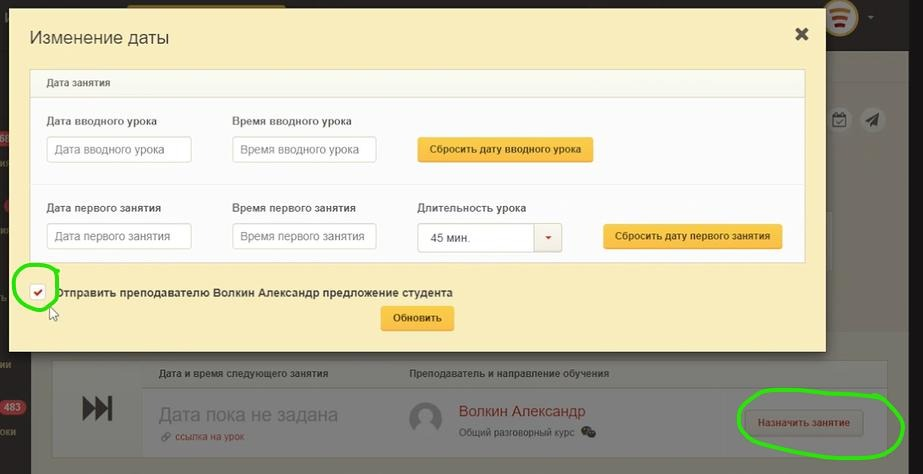
Назначение ВУ с отправкой предложения преподавателю
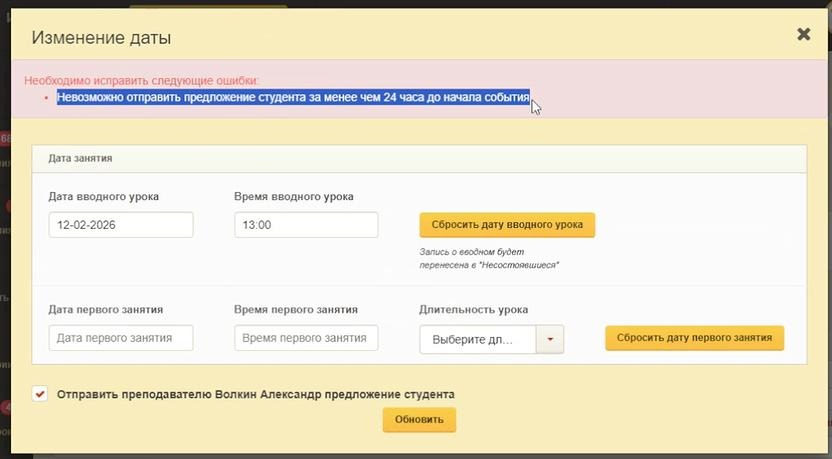
Ошибка при отправке менее чем за 24 часа до урока
Галочку оставляем, когда:
назначаем без согласования и хотим, чтобы преподаватель подтвердил готовность в ЛКП.
Галочку снимаем, когда:
вы уже договорились с преподавателем заранее;
система подсказывает, что до урока осталось слишком мало времени для предложения;
вы открыли уже существующую дату, назначенную раньше — галочка может быть не включена, и обычно так и нужно, если всё было согласовано вручную.
E-mail и уведомление в ЛК: «Назначен вводный/первый урок» — «Вам назначен вводный/первый урок с преподавателем %имя% на %датаВремя%. Пришлём SMS, когда преподаватель подтвердит урок, или свяжемся с вами и согласуем новую дату».
SMS на телефон: «Подтвердите вводный/первый урок в личном кабинете до %датаВремя% мск».
E-mail: «Назначен урок с новым студентом» — с именем студента, датой, курсом, учебником и расписанием.
В ЛКП — модальное окно с предложением студента, где он должен в течение 3 часов в промежутке рабочего времени менеджера (9:00–21:00 мск; если поздно предложили — до утра висит) выбрать «Принять» или «Отказаться».
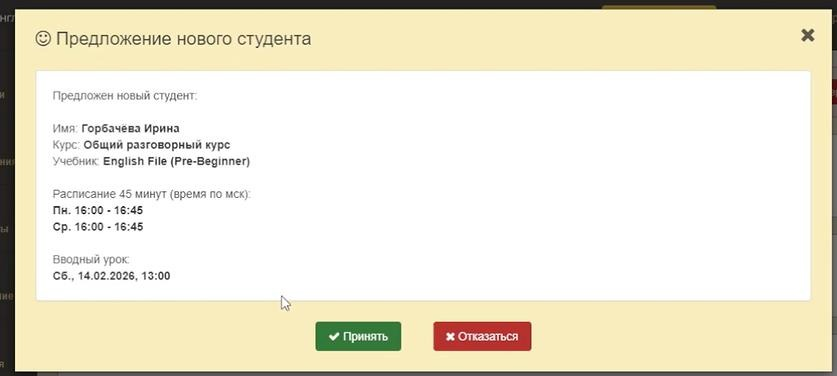
Модальное окно предложения в ЛКП
Преподаватель может обработать запрос в своём ЛК — как на основном устройстве, так и на телефоне в браузерной версии. Если у преподавателя сложности с интернетом и он попросит менеджера принять или отклонить ПСП за него — откройте в ЛК консоль преподавателя и нажмите вверху на иконку «человечек в шляпе»: будет прологин в ЛК преподавателя, где менеджер увидит ПСП и нажмёт «Принять» или «Отказаться». После этого обязательно выйдите из ЛК преподавателя.
Преподаватель принял ПСП
Предложение считается подтверждённым. Запланированный ВУ или первый урок остаётся в силе. Менеджеру уведомления не приходят — делать ничего не нужно.
Студенту автоматически отправится SMS «Вводный/первый урок в «Инглекс» состоится в %датаВремя% мск» и e-mail «Вводный/первый урок подтверждён».
Преподаватель отклонил ПСП
Система автоматически отменяет связанный вводный урок или первый урок и удаляет расписание. В ЛКМ появится уведомление, что нужен переподбор.
Менеджеру нужно связаться со студентом, сообщить, что этот преподаватель не сможет взять его на обучение, предложить другие кандидатуры и по такому же алгоритму назначить ВУ или первый урок.
ПСП истекло (нет реакции вовремя)
Работает так же, как отказ: предложение считается отклонённым, вводный урок или первый урок автоматически отменяется, расписание удаляется. Появится уведомление для переподбора.
Преподавателю отправится e-mail «Вы не успели подтвердить урок» — «Истекло время для подтверждения урока со студентом %имя% на %датаВремя% мск. Передали студента другому преподавателю».
Для менеджеров появляется новый тип уведомлений: ПСП: отклонено. Два варианта:
вручную — преподаватель сам нажал «Отказаться»;
автоматически — истёк срок решения в 3 часа.
При появлении таких уведомлений менеджеру нужно связаться со студентом, сообщить, что этот преподаватель не сможет взять его на обучение, предложить другие кандидатуры и по такому же алгоритму назначить ВУ или первый урок (если без ВУ).
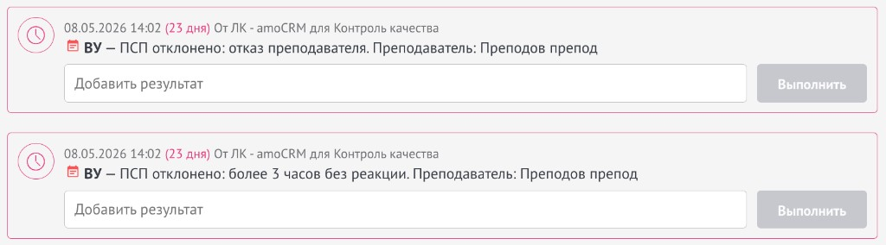
Уведомления «ВУ — ПСП отклонено» в amoCRM
Срочный ВУ не участвует в логике предложения. Если включён «Срочный», но вы назначаете ещё и первый урок, то предложение сработает по первому уроку.
Напоминания о ВУ
Студенту
За 24 часа до ВУ студенту приходит SMS на телефон с напоминанием о времени ВУ.
За 2 часа до ВУ студенту приходит SMS на телефон с напоминанием о времени ВУ.
За 1,5 часа до ВУ идёт автозвонок с просьбой подтвердить готовность посетить ВУ: клиент должен нажать цифру 1 = «Да», 2 = «Нет» (если не ответили или ничего не выбрали — ВУ остаётся назначенным).
За 10 минут до ВУ студенту на почту приходит письмо со ссылкой для прямого перехода в Онлайн-класс.
За 8–10 минут до начала ВУ студенту приходит ещё SMS на телефон о том, что отправили ссылку для входа на e-mail.
Преподавателю
За 2 часа до ВУ преподавателю приходит SMS на телефон с напоминанием о времени ВУ.
Сроки брони расписания / отсрочка в назначении ВУ или ПУ
В наших интересах записать клиента, но если он не показывает сразу свой положительный настрой — не подтверждает ВУ, неоднократно переносит ВУ, переносит первый урок на долгий срок вперёд, не вносит первую оплату, тянет, хочет подумать и т.д. — нам лучше его пока убрать, уведомив об этом, и записать другого желающего на эти часы, который точно готов оплатить и сразу заниматься.
Такие студенты держат бронь на расписании: мы из-за этого не можем воспользоваться часами при другом поиске, да и преподаватель не рад — он ждёт, а его расписание «не работает», часы заняты, а заработка нет.
От даты ВУ первый урок назначается максимум на 2 недели вперёд.
Если студент хочет приступить через 3 недели, через месяц — сообщите, что у нас не принято бронировать график наперёд, мы так долго держать расписание без оплаты и занятий не сможем. Открепим график, а ближе к моменту готовности заниматься согласуем повторно расписание — если получится, с этим же преподавателем, либо подберём другого. Менеджеру подбора согласовать дату, когда с ним связаться.
Дату первого урока (ПУ) студент может перенести не более чем на неделю вперёд от предыдущей даты. Если первый раз не оплатил, а перенёс, потом опять просит перенести — третьего раза не даём: пусть определится с датой начала обучения, потом обращается.
Если студент после ВУ хочет думать — через 3–5 дней уточните у студента его планы. Если он не готов определиться, нужно больше времени, чтобы понять, хотят ли заниматься — график нужно открепить, так долго держать бронь не можем. Будем рады связаться в удобный момент для нового согласования.
Как добавить или изменить комментарий в карточке студента в ЛКМ

Преподаватель увидит этот комментарий в личном кабинете на странице «Студенты» → карточка студента — без информации о менеджере, который оставил комментарий.
